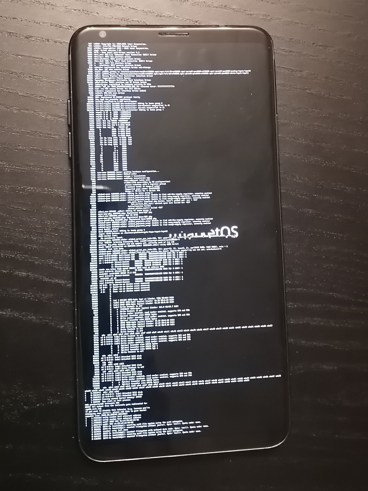

LG V35 ThinQ (lg-judyp)
Jump to navigation
Jump to search
|
 LG V35 ThinQ | |
| Manufacturer | LG |
|---|---|
| Name | V35 ThinQ |
| Codename | lg-judyp |
| Released | 2018 |
| Category | testing |
| Original software | Android 8 up to 10 |
| Hardware | |
| Chipset | Qualcomm Snapdragon 845 (SDM845) |
| CPU | Octa-core (4x 2.8 GHz Kryo 385 Gold & 4x 1.7 GHz Kryo 385 Silver) |
| GPU | Adreno 630 |
| Display | 1440x2880 6" P-OLED |
| Storage | 64/128 GB |
| Memory | 6 GB |
| Architecture | aarch64 |
{kind=link}
| USB Networking |
Works
|
|---|---|
| Flashing |
Works
|
| Touchscreen | |
| Display | |
| WiFi | |
| FDE | |
| Mainline |
Works
|
| Battery | |
| 3D Acceleration | |
| Audio | |
| Bluetooth | |
| Camera | |
| GPS | |
| Mobile data | |
| SMS | |
| Calls | |
| USB OTG | |
| NFC | |
| Accelerometer | |
|---|---|
| Magnetometer | |
| Ambient Light | |
| Proximity | |
| Hall Effect | |
| Barometer | |
| Power Sensor | |
| Camera Flash | |
|---|---|
| Keyboard | |
| Touchpad | |
| USB-A | |
| HDMI/DP | |
| Ir TX |
Unavailable
|
| Ir RX | |
| Stylus | |
| Haptics | |
| Ethernet | |
| FOSS bootloader | |
Contributors
Users owning this device
Preparation
Android fresh update (Android 10 Q: for example, Korean version) is expected. No luck to load the pmOS kernel with the Android 8 Oreo due to some Oreo's bootloader-specific board-id requirement that is not implemented.
Installation
$ fastboot erase dtbo_b # you can use dtbo_a for a slot
$ pmbootstrap init
$ pmbootstrap install --sdcard=/dev/sdX # where /dev/sdX is your SD card
$ # boot into fastboot mode
$ pmbootstrap flasher flash_kernel --partition boot_b # or boot_a